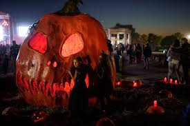
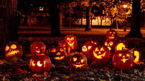

In Germany, there are many spooky traditions that mix old stories with fun new celebrations. Halloween, which came from the United States in the 1990s, has become very popular. Kids dress up in costumes like witches, ghosts, and monsters and go from house to house saying “Süßes oder Saures!”, which means “trick or treat.”
 .jpg)
.jpg)
Big cities like Berlin and Munich have Halloween parties, haunted houses, and parades.
There are also big pumpkin festivals, like the one in Ludwigsburg, where people carve huge pumpkins, make funny or scary shapes, and enjoy food and games.
Long before Halloween became popular, Germany already had its own spooky traditions. On Allerheiligen (All Saints’ Day) and Allerseelen (All Souls’ Day), families visit the graves of loved ones, clean them, and light candles to remember them. People used to believe that the spirits of their relatives came back to visit during this time. Long ago, before pumpkins were common, children carved faces into turnips called Rübengeister to scare away bad spirits—just like jack-o’-lanterns today!
During winter, there are also the Rauhnächte, or “Rough Nights,” the twelve nights between Christmas and early January. In old stories, people said ghosts and wild spirits came out during these nights, so families would burn incense and make loud noises to chase them away. Another spooky German tradition is Walpurgisnacht, celebrated on April 30th. It’s said that witches would fly to the Brocken mountain to meet the devil, so today people light big bonfires, dress up like witches, and have fun festivals to scare away evil.
Altogether, Germany's spooky tratitions mix old legends with new fun. From carving pumpkins and turnips to lighting candles and dressing up, these customs help people celebrate the spooky side of life in their own special way.